Est. Philadelphia · Now serving Ithaca
I’m Kat. I like work where careful analysis and good design meet, and I’m pointing that toward space computing and mission data.
Where I grew up, surrounded by family, and where the curiosity started.
Mathematics and Computer Science. I transferred to Cornell for Dyson’s mix of business and data.
Applied Economics & Management, minoring in Data Science. Class of 2028.
Three UI design concepts, each built with Claude Code. Pick one to see how it was made.
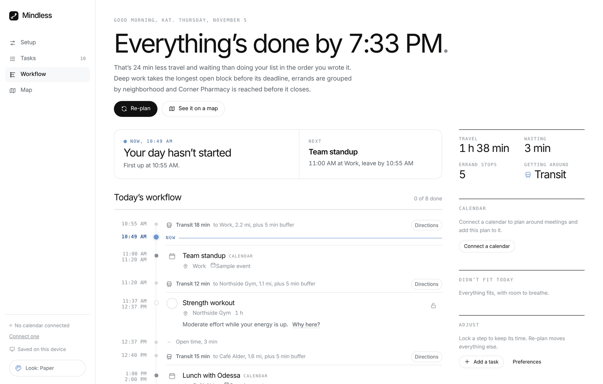
Mindless A calm AI day planner that maps your errands into one route. View project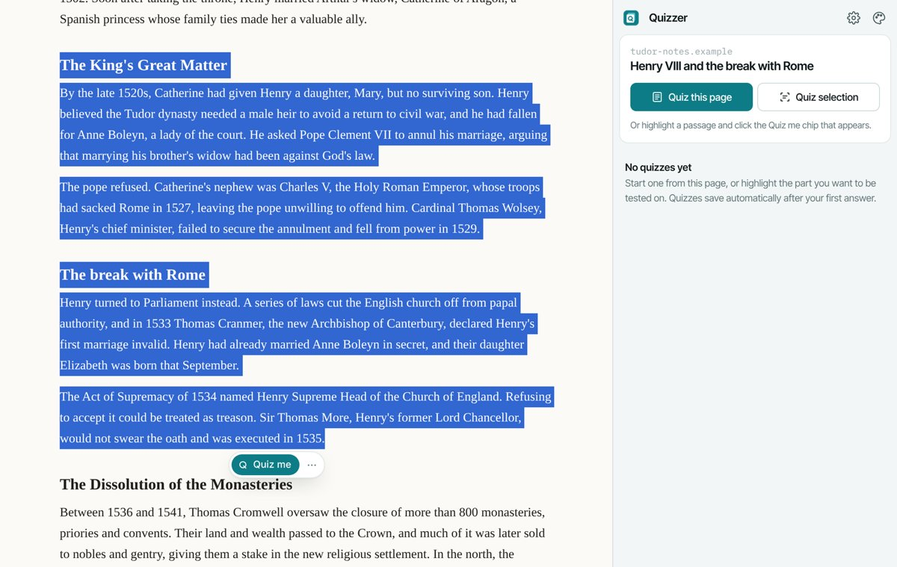
Quizzer A side panel that turns any reading into an endless, adaptive quiz. View project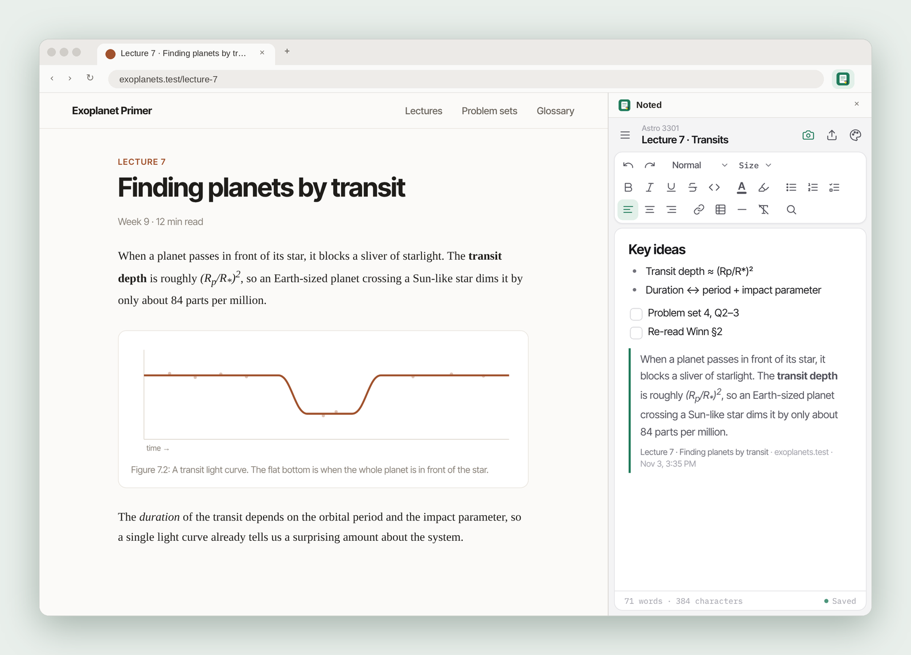
Noted A side-panel notepad that clips and annotates as you browse. View projectAn AI day planner that works out the quickest, calmest way through everything on your list.
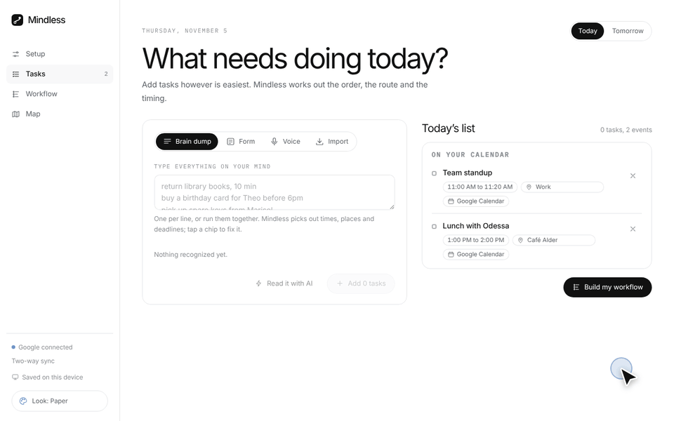
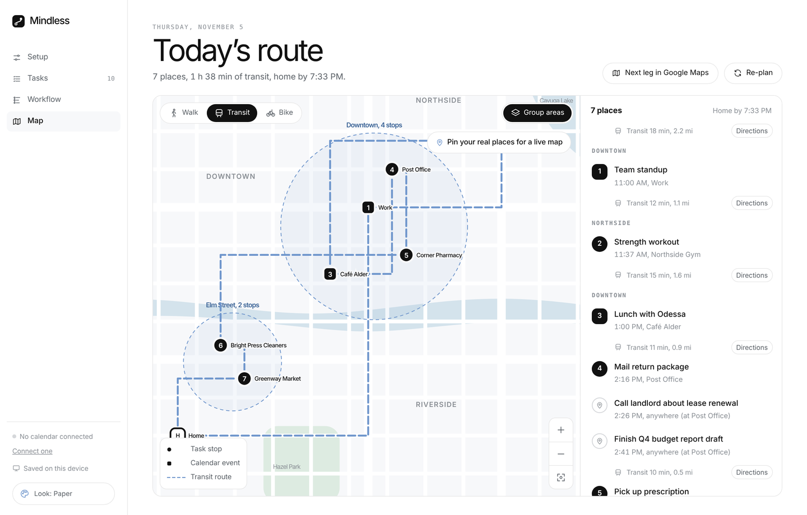
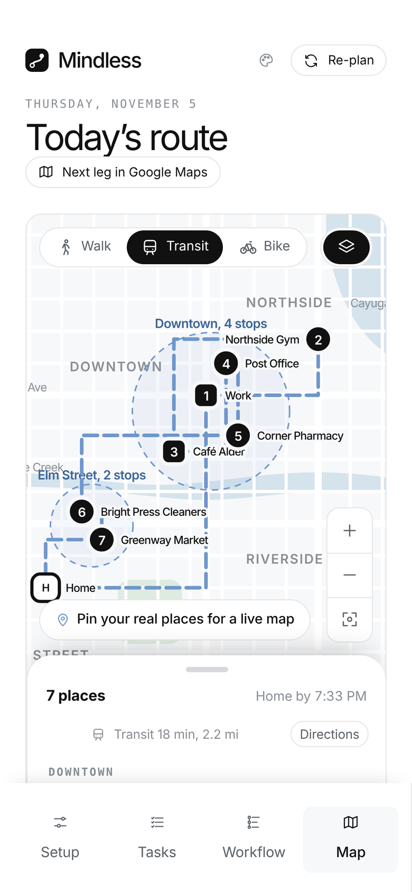
Still in progress. The biggest lesson so far is speed: with Claude Code I can take a design idea to a working planner fast enough to try it for real, then keep refining.
A Chrome side panel that turns the page you’re reading, or a passage you highlight, into an endless, adaptive quiz with AI explanations.
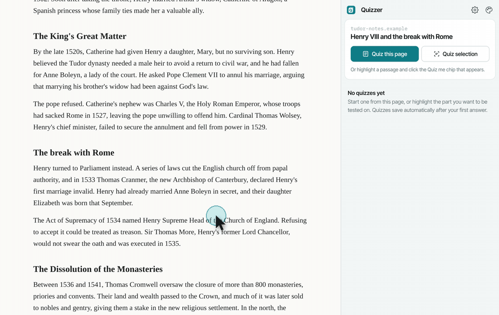
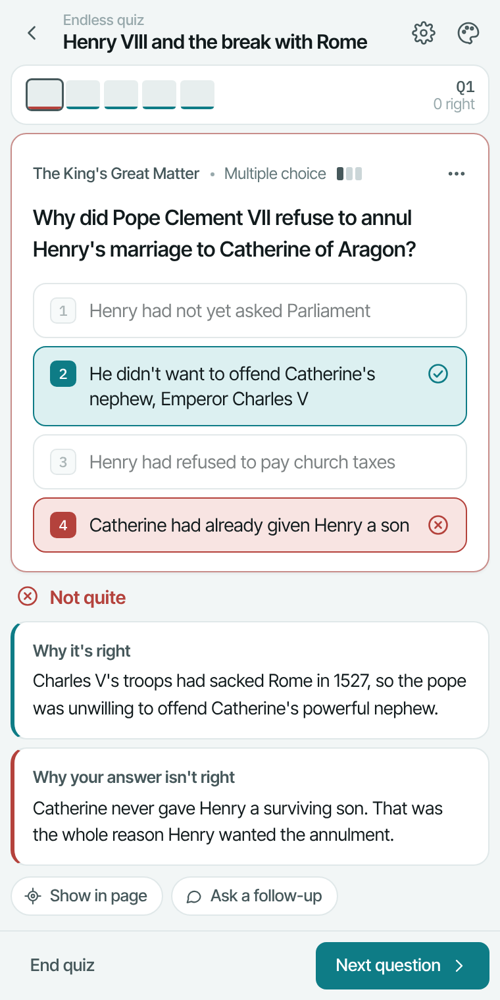
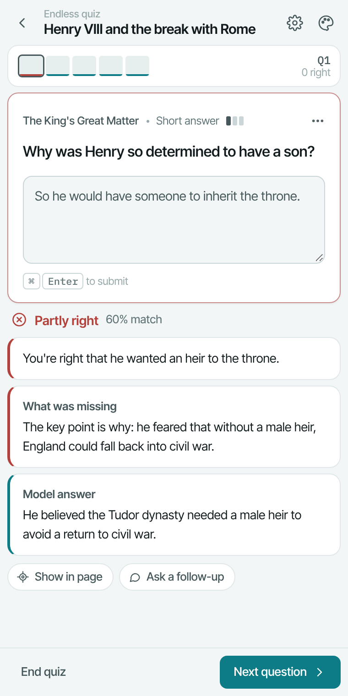
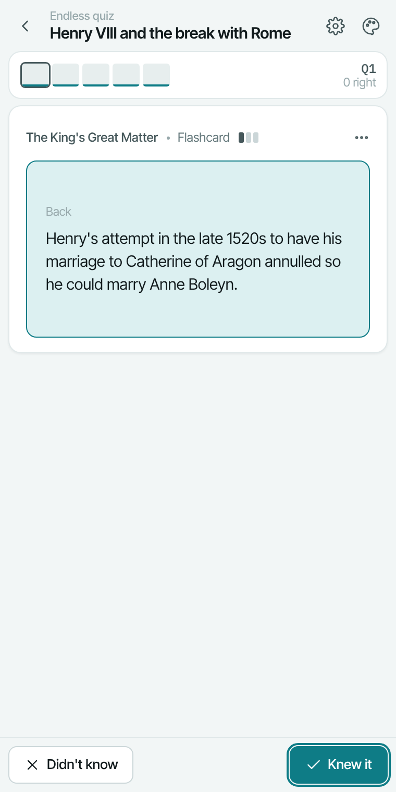
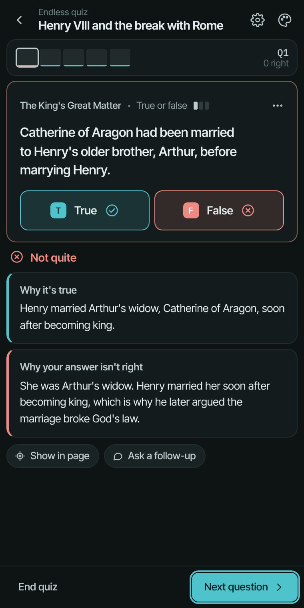
Made in a weekend as a sibling to Noted, sharing its design system with its own Lagoon accent. It showed me how quickly a focused idea can become a working tool with Claude Code.
A notepad that lives in Chrome’s side panel, so your notes stay open while you switch tabs.
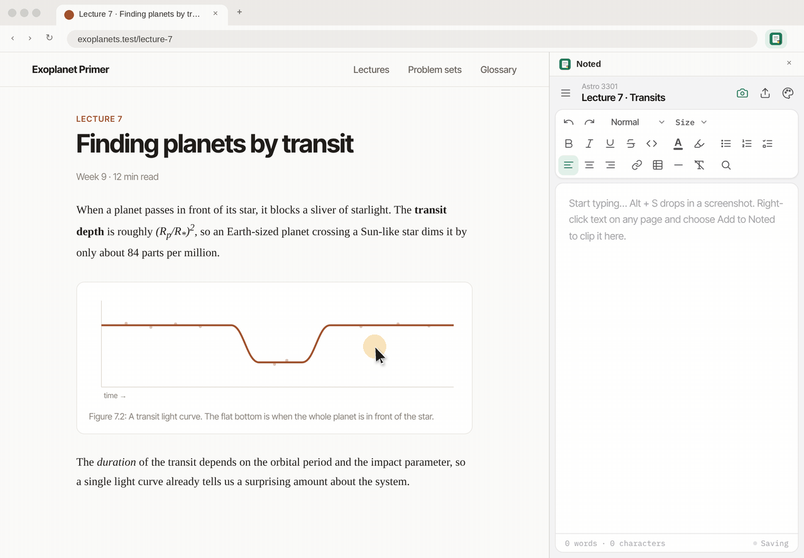
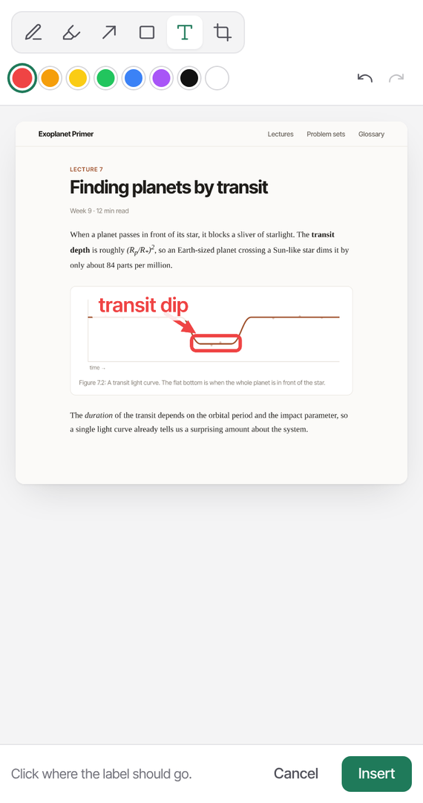
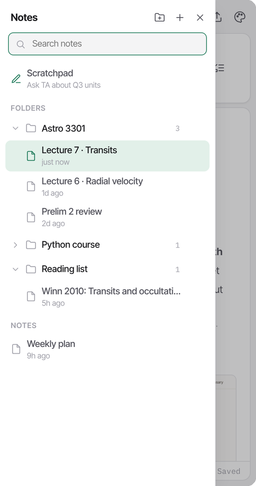
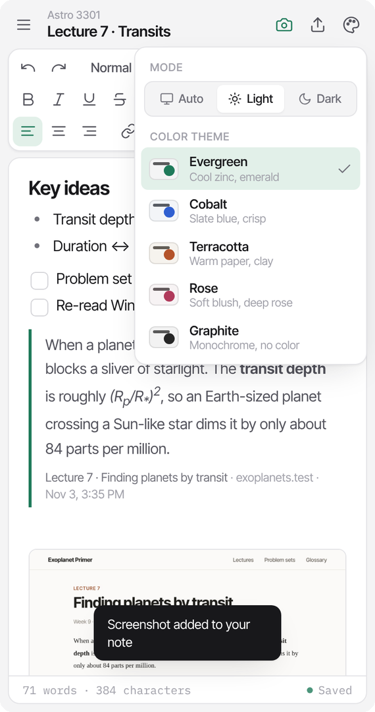
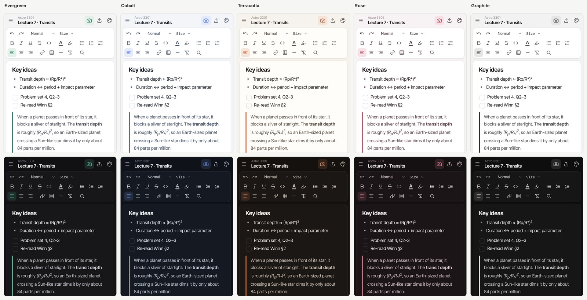
I wanted a notepad one click away on whatever tab I was on, and a way to put screenshots of what I’m looking at straight into my notes without downloading them and filling up my laptop.
The pastry case: things I make and love when nobody’s grading them.
Mostly portraits, people and characters.
Made in Procreate“We’re the middle children of history, born too late to explore the earth, born too early to explore space.”
Space & missions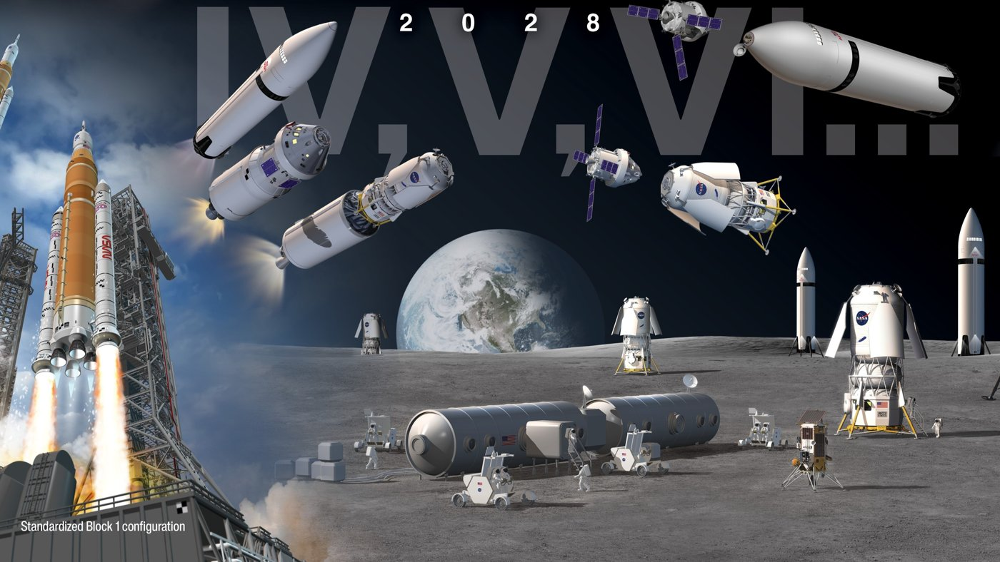
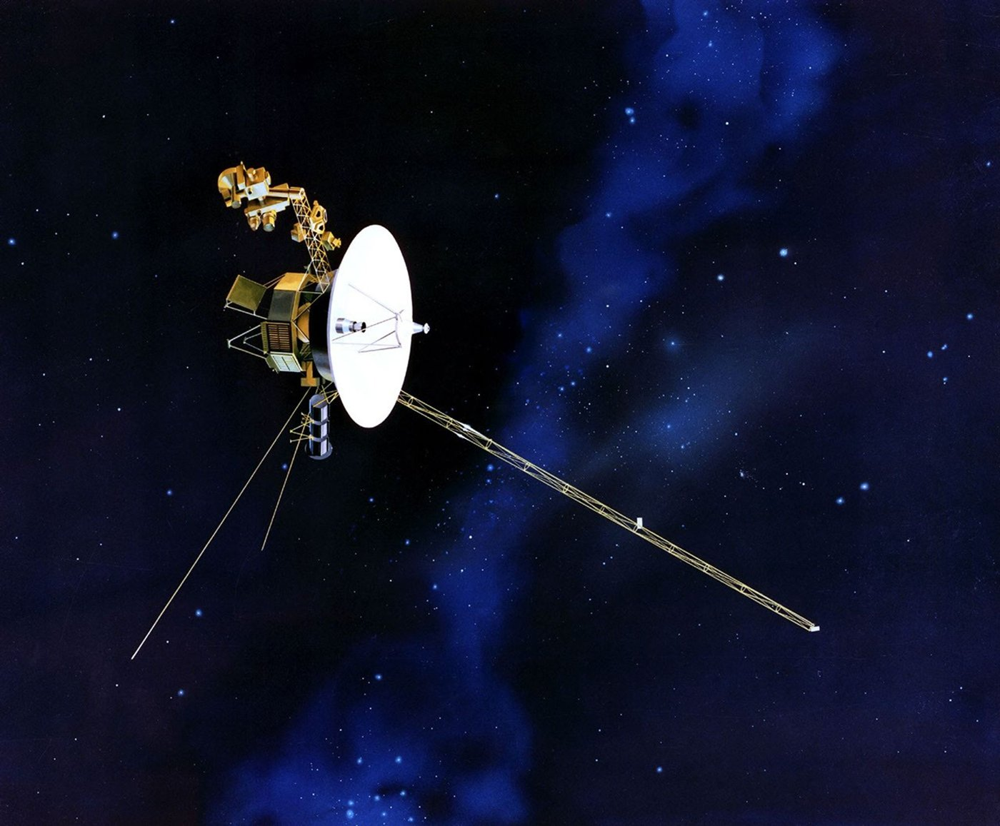
I build my own Roblox worlds and play plenty of other people’s.
GamesShort things I write between bigger projects. Pick a drink by how long you’ve got.
Finally done with internship recruitment, been such a soul-sucking journey.
Based in Ithaca, NY · Open to design, product or data internships, summer 2027